Продолжаем изучать элементарные задачи по математике. Данный урок посвящен задачам на движение.
Предварительные навыки Содержание урока- Задача на нахождение расстояния/скорости/времени
- Скорость сближения
- Скорость удаления
- Задача на движение объектов в одном направлении
- Задача на движение по реке
- Задачи для самостоятельного решения
Задача на нахождение расстояния/скорости/времени
Задача 1. Автомобиль двигается со скоростью 80 км/ч. Сколько километров он проедет за 3 часа?
Решение
Если за один час автомобиль проезжает 80 километров, то за 3 часа он проедет в три раза больше. Чтобы найти расстояние, нужно скорость автомобиля (80км/ч) умножить на время движения (3ч)
80 × 3 = 240 км
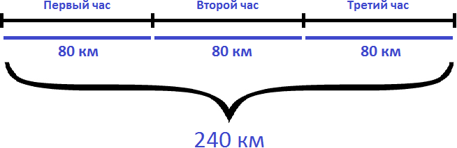
Ответ: за 3 часа автомобиль проедет 240 километров.
Задача 2. На автомобиле за 3 часа проехали 180 км с одной и той же скоростью. Чему равна скорость автомобиля?
Решение
Скорость — это расстояние, пройденное телом за единицу времени. Под единицей подразумевается 1 час, 1 минута или 1 секунда.
Если за 3 часа автомобиль проехал 180 километров с одной и той же скоростью, то разделив 180 км на 3 часа мы определим расстояние, которое проезжал автомобиль за один час. А это есть скорость движения. Чтобы определить скорость, нужно пройденное расстояние разделить на время движения:
180 : 3 = 60 км/ч
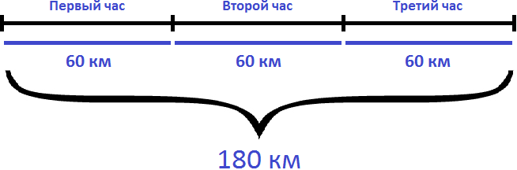
Ответ: скорость автомобиля составляет 60 км/ч
Задача 3. За 2 часа автомобиль проехал 96 км, а велосипедист за 6 часов проехал 72 км. Во сколько раз автомобиль двигался быстрее велосипедиста?
Решение
Определим скорость движения автомобиля. Для этого разделим пройденное им расстояние (96км) на время его движения (2ч)
96 : 2 = 48 км/ч
Определим скорость движения велосипедиста. Для этого разделим пройденное им расстояние (72км) на время его движения (6ч)
72 : 6 = 12 км/ч
Узнаем во сколько раз автомобиль двигался быстрее велосипедиста. Для этого найдем отношение 48 к 12
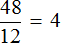
Ответ: автомобиль двигался быстрее велосипедиста в 4 раза.
Задача 4. Вертолет преодолел расстояние в 600 км со скоростью 120 км/ч. Сколько времени он был в полете?
Решение
Если за 1 час вертолет преодолевал 120 километров, то узнав сколько таких 120 километров в 600 километрах, мы определим сколько времени он был в полете. Чтобы найти время, нужно пройденное расстояние разделить на скорость движения
600 : 120 = 5 часов
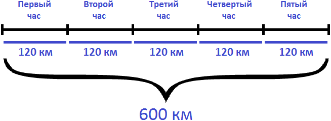
Ответ: вертолет был в пути 5 часов.
Задача 5. Вертолет летел 6 часов со скоростью 160 км/ч. Какое расстояние он преодолел за это время?
Решение
Если за 1 час вертолет преодолевал 160 км, то за 6 часов, он преодолел в шесть раз больше. Чтобы определить расстояние, нужно скорость движения умножить на время
160 × 6 = 960 км
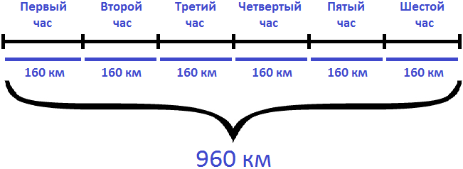
Ответ: за 6 часов вертолет преодолел 960 км.
Задача 6. Расстояние от Перми до Казани, равное 723 км, автомобиль проехал за 13 часов. Первые 9 часов он ехал со скоростью 55 км/ч. Определить скорость автомобиля в оставшееся время.
Решение
Определим сколько километров автомобиль проехал за первые 9 часов. Для этого умножим скорость с которой он ехал первые девять часов (55км/ч) на 9
55 × 9 = 495 км
Определим сколько осталось проехать. Для этого вычтем из общего расстояния (723км) расстояние, пройденное за первые 9 часов движения
723 − 495 = 228 км
Эти 228 километров автомобиль проехал за оставшиеся 4 часа. Чтобы определить скорость автомобиля в оставшееся время, нужно 228 километров разделить на 4 часа:
228 : 4 = 57 км/ч
Ответ: скорость автомобиля в оставшееся время составляла 57 км/ч
Скорость сближения
Скорость сближения — это расстояние, пройденное двумя объектами навстречу друг другу за единицу времени.
Например, если из двух пунктов навстречу друг другу отправятся два пешехода, причем скорость первого будет 100 м/м, а второго — 105 м/м, то скорость сближения будет составлять 100 + 105, то есть 205 м/м. Это значит, что каждую минуту расстояние между пешеходами будет уменьшáться на 205 метров
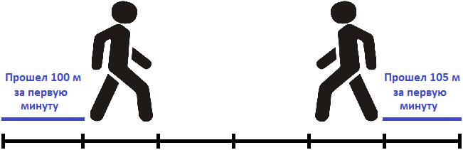
Чтобы найти скорость сближения, нужно сложить скорости объектов.
Предположим, что пешеходы встретились через три минуты после начала движения. Зная, что они встретились через три минуты, мы можем узнать расстояние между двумя пунктами.
Каждую минуту пешеходы преодолевали расстояние равное двухсот пяти метрам. Через 3 минуты они встретились. Значит умножив скорость сближения на время движения, можно определить расстояние между двумя пунктами:
205 × 3 = 615 метров
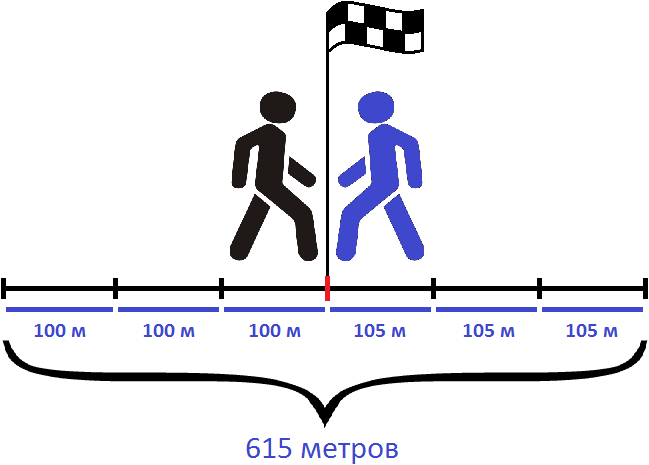
Можно и по другому определить расстояние между пунктами. Для этого следует найти расстояние, которое прошел каждый пешеход до встречи.
Так, первый пешеход шел со скоростью 100 метров в минуту. Встреча состоялась через три минуты, значит за 3 минуты он прошел 100 × 3 метров
100 × 3 = 300 метров
А второй пешеход шел со скоростью 105 метров в минуту. За три минуты он прошел 105 × 3 метров
105 × 3 = 315 метров
Теперь можно сложить полученные результаты и таким образом определить расстояние между двумя пунктами:
300 м + 315 м = 615 м
Задача 1. Из двух населенных пунктов навстречу друг другу выехали одновременно два велосипедиста. Скорость первого велосипедиста 10 км/ч, а скорость второго — 12 км/ч. Через 2 часа они встретились. Определите расстояние между населенными пунктами
Решение
Найдем скорость сближения велосипедистов
10 км/ч + 12 км/ч = 22 км/ч
Определим расстояние между населенными пунктами. Для этого скорость сближения умножим на время движения
22 × 2 = 44 км
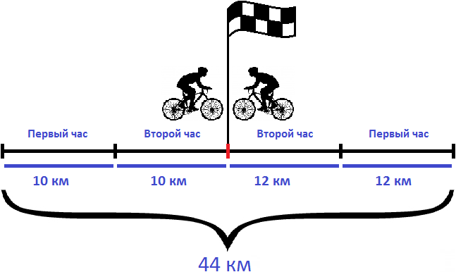
Решим эту задачу вторым способом. Для этого найдем расстояния, пройденные велосипедистами и сложим полученные результаты.
Найдем расстояние, пройденное первым велосипедистом:
10 × 2 = 20 км
Найдем расстояние, пройденное вторым велосипедистом:
12 × 2 = 24 км
Сложим полученные расстояния:
20 км + 24 км = 44 км
Ответ: расстояние между населенными пунктами составляет 44 км.
Задача 2. Из двух населенных пунктов, расстояние между которыми 60 км, навстречу друг другу выехали одновременно два велосипедиста. Скорость первого велосипедиста 14 км/ч, а скорость второго — 16 км/ч. Через сколько часов они встретились?
Решение
Найдем скорость сближения велосипедистов:
14 км/ч + 16 км/ч = 30 км/ч
За один час расстояние между велосипедистами уменьшается на 30 километров. Чтобы определить через сколько часов они встретятся, нужно расстояние между населенными пунктами разделить на скорость сближения:
60 : 30 = 2 часа
Значит велосипедисты встретились через два часа
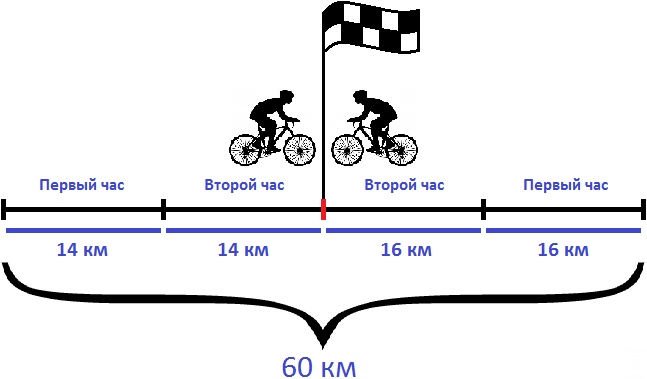
Ответ: велосипедисты встретились через 2 часа.
Задача 3. Из двух населенных пунктов, расстояние между которыми 56 км, навстречу друг другу выехали одновременно два велосипедиста. Через два часа они встретились. Первый велосипедист ехал со скоростью 12 км/ч. Определить скорость второго велосипедиста.
Решение
Определим расстояние пройденное первым велосипедистом. Как и второй велосипедист в пути он провел 2 часа. Умножив скорость первого велосипедиста на 2 часа, мы сможем узнать сколько километров он прошел до встречи
12 × 2 = 24 км
За два часа первый велосипедист прошел 24 км. За один час он прошел 24:2, то есть 12 км. Изобразим это графически
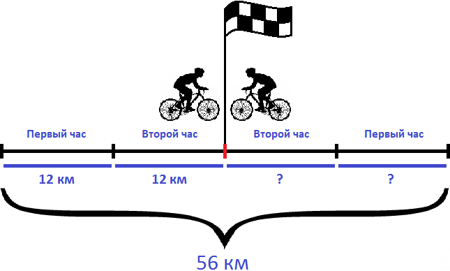
Вычтем из общего расстояния (56 км) расстояние, пройденное первым велосипедистом (24 км). Так мы определим сколько километров прошел второй велосипедист:
56 км − 24 км = 32 км
Второй велосипедист, как и первый провел в пути 2 часа. Если мы разделим пройденное им расстояние на 2 часа, то узнаем с какой скоростью он двигался:
32 : 2 = 16 км/ч
Значит скорость второго велосипедиста составляет 16 км/ч.
Ответ: скорость второго велосипедиста составляет 16 км/ч.
Скорость удаления
Скорость удаления — это расстояние, которое увеличивается за единицу времени между двумя объектами, двигающимися в противоположных направлениях.
Например, если два пешехода отправятся из одного и того же пункта в противоположных направлениях, причем скорость первого будет 4 км/ч, а скорость второго 6 км/ч, то скорость удаления будет составлять 4+6, то есть 10 км/ч. Каждый час расстояние между двумя пешеходами будет увеличиться на 10 километров.
Чтобы найти скорость удаления, нужно сложить скорости объектов.
Так, за первый час расстояние между пешеходами будет составлять 10 километров. На следующем рисунке можно увидеть, как это происходит
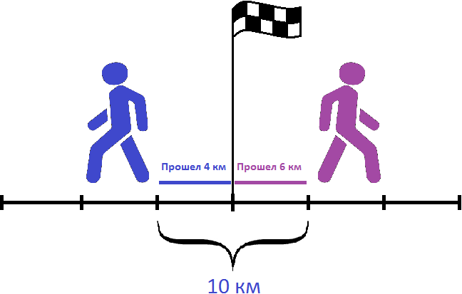
Видно, что первый пешеход прошел свои 4 километра за первый час. Второй пешеход также прошел свои 6 километров за первый час. Итого за первый час расстояние между ними стало 4+6, то есть 10 километров.
Через два часа расстояние между пешеходами будет составлять 10×2, то есть 20 километров. На следующем рисунке можно увидеть, как это происходит:
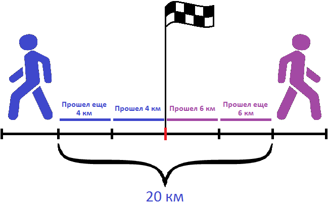
Задача 1. От одной станции отправились одновременно в противоположных направлениях товарный поезд и пассажирский экспресс. Скорость товарного поезда составляла 40 км/ч, скорость экспресса 180 км/ч. Какое расстояние будет между этими поездами через 2 часа?
Решение
Определим скорость удаления поездов. Для этого сложим их скорости:
40 + 180 = 220 км/ч
Получили скорость удаления поездов равную 220 км/ч. Данная скорость показывает, что за час расстояние между поездами будет увеличиваться на 220 километров. Чтобы узнать какое расстояние будет между поездами через два часа, нужно 220 умножить на 2
220 × 2 = 440 км
Ответ: через 2 часа расстояние будет между поездами будет 440 километров.
Задача 2. Из пункта одновременно в противоположных направлениях отправились велосипедист и мотоциклист. Скорость велосипедиста 16 км/ч, а скорость мотоциклиста — 40 км/ч. Какое расстояние будет между велосипедистом и мотоциклистом через 2 часа?
Решение
Определим скорость удаления велосипедиста и мотоциклиста. Для этого сложим их скорости:
16 км/ч + 40 км/ч = 56 км/ч
Определим расстояние, которое будет между велосипедистом и мотоциклистом через 2 часа. Для этого скорость удаления (56км/ч) умножим на 2 часа
56 × 2 = 112 км
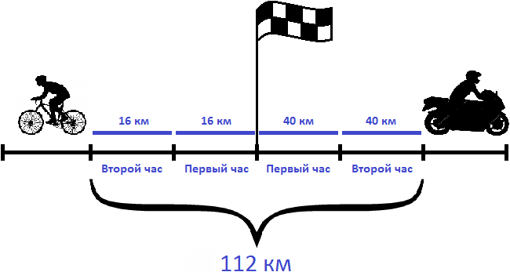
Ответ: через 2 часа расстояние между велосипедистом и мотоциклистом будет 112 км.
Задача 3. Из пункта одновременно в противоположных направлениях отправились велосипедист и мотоциклист. Скорость велосипедиста 10 км/ч, а скорость мотоциклиста — 30 км/ч. Через сколько часов расстояние между ними будет 80 км?
Решение
Определим скорость удаления велосипедиста и мотоциклиста. Для этого сложим их скорости:
10 км/ч + 30 км/ч = 40 км/ч
За один час расстояние между велосипедистом и мотоциклистом увеличивается на 40 километров. Чтобы узнать через сколько часов расстояние между ними будет 80 км, нужно определить сколько раз 80 км содержит по 40 км
\[80 : 40 = 2\]
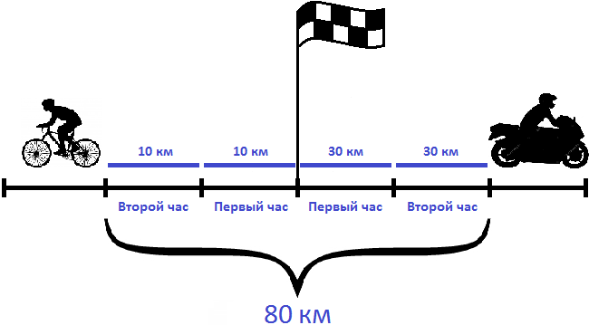
Ответ: через 2 часа после начала движения, между велосипедистом и мотоциклистом будет 80 километров.
Задача 4. Из пункта одновременно в противоположных направлениях отправились велосипедист и мотоциклист. Через 2 часа расстояние между ними было 90 км. Скорость велосипедиста составляла 15 км/ч. Определить скорость мотоциклиста
Решение
Определим расстояние, пройденное велосипедистом за 2 часа. Для этого умножим его скорость (15 км/ч) на 2 часа
15 × 2 = 30 км
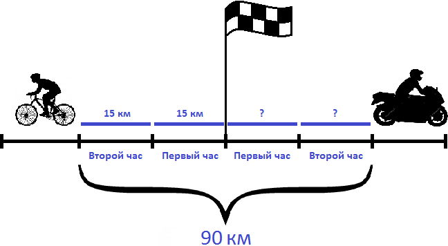
На рисунке видно, что велосипедист прошел по 15 километров в каждом часе. Итого за два часа он прошел 30 километров.
Вычтем из общего расстояния (90 км) расстояние, пройденное велосипедистом (30 км). Так мы определим сколько километров прошел мотоциклист:
90 км − 30 км = 60 км
Мотоциклист за два часа прошел 60 километров. Если мы разделим пройденное им расстояние на 2 часа, то узнаем с какой скоростью он двигался:
60 : 2 = 30 км/ч
Значит скорость мотоциклиста составляла 30 км/ч.
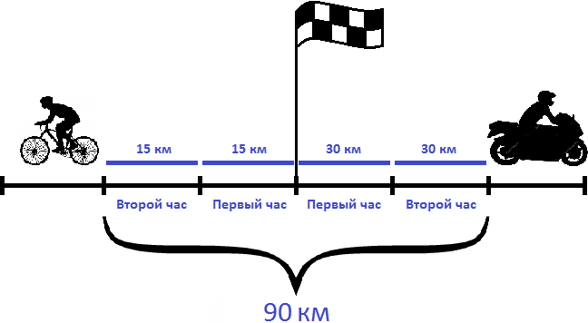
Ответ: скорость мотоциклиста составляла 30 км/ч.
Задача на движение объектов в одном направлении
В предыдущей теме мы рассматривали задачи в которых объекты (люди, машины, лодки) двигались либо навстречу другу другу либо в противоположных направлениях. При этом мы находили различные расстояния, которые изменялись между объектами в течении определенного времени. Эти расстояния были либо скоростями сближения либо скоростями удаления.
В первом случае мы находили скорость сближения — в ситуации, когда два объекта двигались навстречу друг другу. За единицу времени расстояние между объектами уменьшалось на определенное расстояние
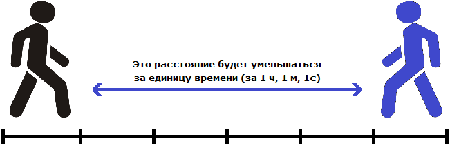
Во втором случае мы находили скорость удаления — в ситуации, когда два объекта двигались в противоположных направлениях. За единицу времени расстояние между объектами увеличивалось на определенное расстояние
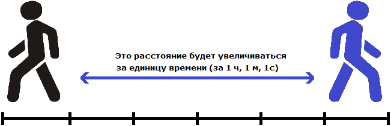
Но объекты также могут двигаться в одном направлении, причем с различной скоростью. Например, из одного пункта одновременно могут выехать велосипедист и мотоциклист, причем скорость велосипедиста может составлять 20 километров в час, а скорость мотоциклиста — 40 километров в час
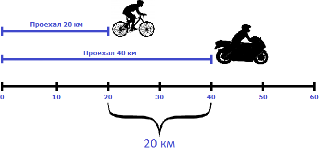
На рисунке видно, что мотоциклист впереди велосипедиста на двадцать километров. Связано это с тем, что в час он преодолевает на 20 километров больше, чем велосипедист. Поэтому каждый час расстояние между велосипедистом и мотоциклистом будет увеличиваться на двадцать километров.
В данном случае 20 км/ч являются скоростью удаления мотоциклиста от велосипедиста.
Через два часа расстояние, пройденное велосипедистом будет составлять 40 км. Мотоциклист же проедет 80 км, отдалившись от велосипедиста еще на двадцать километров — итого расстояние между ними составит 40 километров
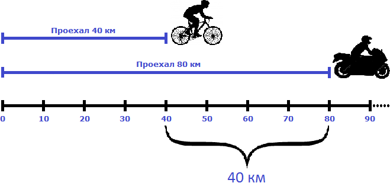
Чтобы найти скорость удаления при движении в одном направлении, нужно из большей скорости вычесть меньшую скорость.
В приведенном выше примере, скорость удаления составляет 20 км/ч. Её можно найти путем вычитания скорости велосипедиста из скорости мотоциклиста. Скорость велосипедиста составляла 20 км/ч, а скорость мотоциклиста — 40 км/ч. Скорость мотоциклиста больше, поэтому из 40 вычитаем 20
40 км/ч − 20 км/ч = 20 км/ч
Задача 1. Из города в одном и том же направлении выехали легковой автомобиль и автобус. Скорость автомобиля 120 км/ч, а скорость автобуса 80 км/ч. Какое расстояние будет между ними через 1 час? 2 часа?
Решение
Найдем скорость удаления. Для этого из большей скорости вычтем меньшую
120 км/ч − 80 км/ч = 40 км/ч
Каждый час легковой автомобиль отдаляется от автобуса на 40 километров. За один час расстояние между автомобилем и автобусом будет 40 км. За 2 часа в два раза больше:
40 × 2 = 80 км
Ответ: через один час расстояние между автомобилем и автобусом будет 40 км, через два часа — 80 км.
Рассмотрим ситуацию в которой объекты начали свое движение из разных пунктов, но в одном направлении.
Пусть имеется дом, школа и аттракцион. От дома до школы 700 метров
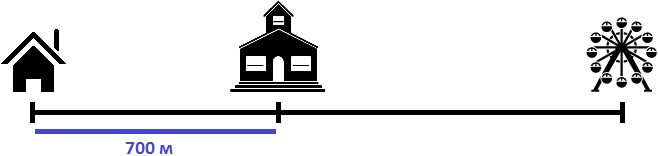
Два пешехода отправились в аттракцион в одно и то же время. Причем первый пешеход отправился в аттракцион от дома со скоростью 100 метров в минуту, а второй пешеход отправился в аттракцион от школы со скоростью 80 метров в минуту. Какое расстояние будет между пешеходами через 2 минуты? Через сколько минут после начала движения первый пешеход догонит второго?
Ответим на первый вопрос задачи — какое расстояние будет между пешеходами через 2 минуты?
Определим расстояние, пройденное первым пешеходом за 2 минуты. Он двигался со скоростью 100 метров в минуту. За две минуты он пройдет в два раза больше, то есть 200 метров
100 × 2 = 200 метров
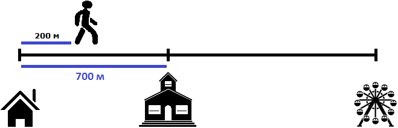
Определим расстояние, пройденное вторым пешеходом за 2 минуты. Он двигался со скоростью 80 метров в минуту. За две минуты он пройдет в два раза больше, то есть 160 метров
80 × 2 = 160 метров
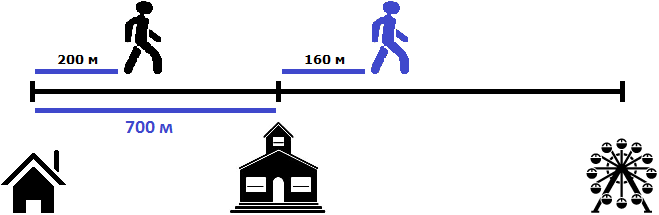
Теперь нужно найти расстояние между пешеходами
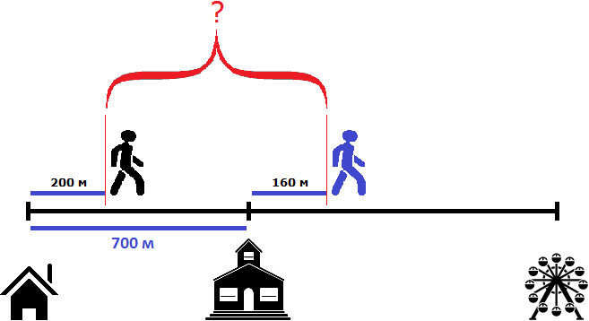
Чтобы найти расстояние между пешеходами, можно к расстоянию от дома до школы (700м) прибавить расстояние, пройденное вторым пешеходом (160м) и из полученного результата вычесть расстояние, пройденное первым пешеходом (200м)
700 м + 160 м = 860 м
860 м − 200 м = 660 м
Либо из расстояния от дома до школы (700м) вычесть расстояние, пройденное первым пешеходом (200м), и к полученному результату прибавить расстояние, пройденное вторым пешеходом (160м)
700 м − 200 м = 500 м
500 м + 160 м = 660 м
Таким образом, через две минуты расстояние между пешеходами будет составлять 660 метров
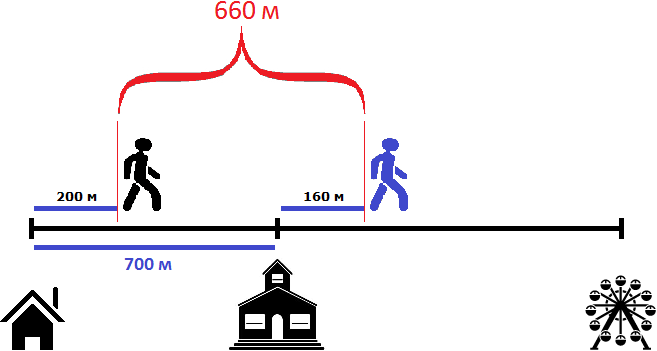
Попробуем ответить на следующий вопрос задачи: через сколько минут после начала движения первый пешеход догонит второго?
Давайте посмотрим какой была ситуация в самом начале пути — когда пешеходы еще не начали своё движение
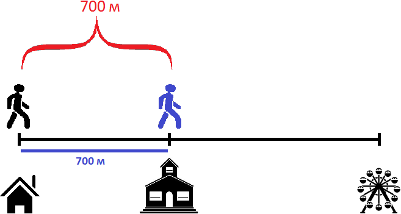
Как видно на рисунке, расстояние между пешеходами в начале пути составляло 700 метров. Но уже через минуту после начала движения расстояние между ними будет составлять 680 метров, поскольку первый пешеход двигается на 20 метров быстрее второго:
100 м × 1 = 100 м
80 м × 1 = 80 м
700 м + 80 м − 100 м = 780 м − 100 м = 680 м
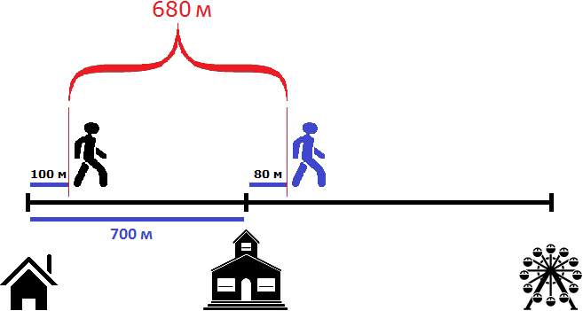
Через две минуты после начала движения, расстояние уменьшится еще на 20 метров и будет составлять 660 метров. Это был наш ответ на первый вопрос задачи:
100 м × 2 = 200 м
80 м × 2 = 160 м
700 м + 160 м − 200м = 860 м − 200 м = 660 м
Через три минуты расстояние уменьшится еще на 20 метров и будет уже составлять 640 метров:
100 м × 3 = 300 м
80 м × 3 = 240 м
700 м + 240 м − 300м = 940 м − 300 м = 640 м
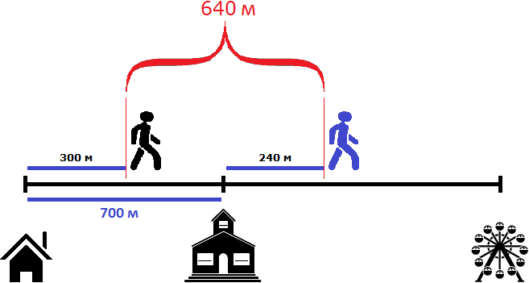
Мы видим, что с каждой минутой первый пешеход будет приближáться ко второму на 20 метров, и в конце концов догонит его. Можно сказать, что скорость равная двадцати метрам в минуту является скоростью сближения пешеходов. Правила нахождения скорости сближения и удаления при движении в одном направлении идентичны.
Чтобы найти скорость сближения при движении в одном направлении, нужно из большей скорости вычесть меньшую.
А раз изначальные 700 метров с каждой минутой уменьшаются на одинаковые 20 метров, то мы можем узнать сколько раз 700 метров содержат по 20 метров, тем самым определяя через сколько минут первый пешеход догонит второго
\[700 : 20 = 35\]
Значит через 35 минут после начала движения первый пешеход догонит второго. Для интереса узнаем сколько метров прошел к этому времени каждый пешеход. Первый двигался со скоростью 100 метров в минуту. За 35 минут он прошел в 35 раз больше
100 × 35 = 3500 м
Второй шел со скоростью 80 метров в минуту. За 35 минут он прошел в 35 раз больше
80 × 35 = 2800 м
Первый прошел 3500 метров, а второй 2800 метров. Первый прошел на 700 метров больше, поскольку он шел от дома. Если вычесть эти 700 метров из 3500, то мы получим 2800 м
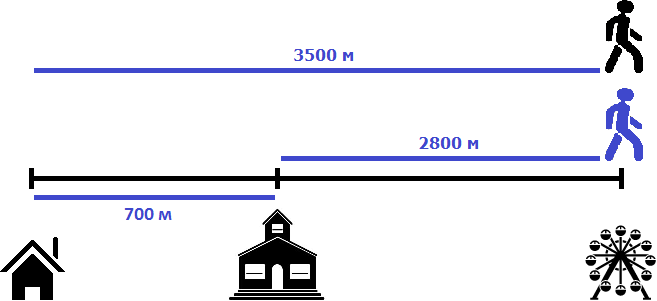
Рассмотрим ситуацию в которой объекты движутся в одном направлении, но один из объектов начал своё движение раньше другого.
Пусть имеется дом и школа. Первый пешеход отправился в школу со скоростью 80 метров в минуту. Через 5 минут вслед за ним в школу отправился второй пешеход со скоростью 100 метров в минуту. Через сколько минут второй пешеход догонит первого?
Второй пешеход начал свое движение через 5 минут. К этому времени первый пешеход уже отдалился от него на какое-то расстояние. Найдём это расстояние. Для этого умножим его скорость (80 м/м) на 5 минут
80 × 5 = 400 метров
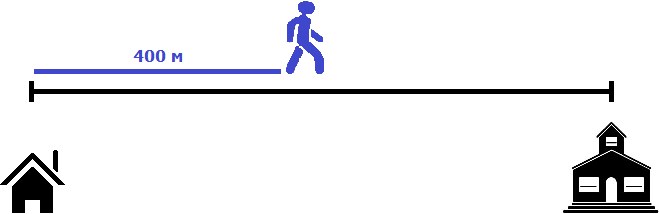
Первый пешеход отдалился от второго на 400 метров. Поэтому в момент, когда второй пешеход начнет свое движение, между ними будут эти самые 400 метров.
Но второй пешеход двигается со скоростью 100 метров в минуту. То есть двигается на 20 метров быстрее первого пешехода, а значит с каждой минутой расстояние между ними будет уменьшáться на 20 метров. Наша задача узнать через сколько минут это произойдет.
Например, уже через минуту расстояние между пешеходами будет составлять 380 метров. Первый пешеход к своим 400 метрам пройдет еще 80 метров, а второй пройдет 100 метров
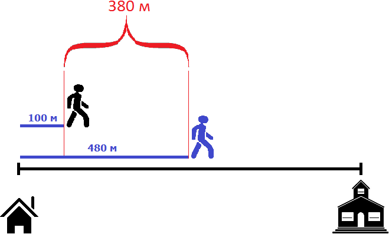
Принцип здесь такой-же, как и в предыдущей задаче. Расстояние между пешеходами в момент движения второго пешехода необходимо разделить на скорость сближения пешеходов. Скорость сближения в данном случае равна двадцати метрам. Поэтому, чтобы определить через сколько минут второй пешеход догонит первого, нужно 400 метров разделить на 20
\[400 : 20 = 20\]
Значит через 20 минут второй пешеход догонит первого.
Задача 2. Из двух сел, расстояние между которыми 40 км, одновременно в одном направлении выехали автобус и велосипедист. Скорость велосипедиста 15 км/ч, а скорость автобуса 35 км/ч. Через сколько часов автобус догонит велосипедиста?
Решение
Найдем скорость сближения
35 км/ч − 15 км/ч = 20 км/ч
Определим через часов автобус догонит велосипедиста
\[40 : 20 = 2\]
Ответ: автобус догонит велосипедиста через 2 часа.
Задача на движение по реке
Суда двигаются по реке с различной скоростью. При этом они могут двигаться, как по течению реки, так и против течения. В зависимости от того, как они двигаются (по или против течения), скорость будет меняться.
Предположим, что скорость реки составляет 3 км/ч. Если спустить лодку на реку, то река унесет лодку со скоростью 3 км/ч.
Если спустить лодку на стоячую воду, в которой отсутствует течение, то и лодка будет стоять. Скорость движения лодки в этом случае будет равна нулю.
Если лодка плывет по стоячей воде, в которой отсутствует течение, то говорят, что лодка плывет с собственной скоростью.
Например, если моторная лодка плывет по стоячей воде со скоростью 40 км/ч, то говорят что собственная скорость моторной лодки составляет 40 км/ч.
Как определить скорость судна?
Если судно плывет по течению реки, то к собственной скорости судна нужно прибавить скорость течения реки.
Например, если моторная лодка плывет со скоростью 30 км/ч по течению реки, и скорость течения реки составляет 2 км/ч, то к собственной скорости моторной лодки (30 км/ч) необходимо прибавить скорость течения реки (2 км/ч)
30 км/ч + 2 км/ч = 32 км/ч
Течение реки можно сказать помогает моторной лодке дополнительной скоростью равной двум километрам в час.
Если судно плывет против течения реки, то из собственной скорости судна нужно вычесть скорость течения реки.
Например, если моторная лодка плывет со скоростью 30 км/ч против течения реки, и скорость течения реки составляет 2 км/ч, то из собственной скорости моторной лодки (30 км/ч) необходимо вычесть скорость течения реки (2 км/ч)
30 км/ч − 2 км/ч = 28 км/ч
Течение реки в этом случае препятствует моторной лодке свободно двигаться вперед, снижая её скорость на два километра в час.
Задача 1. Скорость катера 40 км/ч, а скорость течения реки 3 км/ч. С какой скоростью катер будет двигаться по течению реки? Против течения реки?
Ответ:
Если катер будет двигаться по течения реки, то скорость его движения составит 40 + 3, то есть 43 км/ч.
Если катер будет двигаться против течения реки, то скорость его движения составит 40 − 3, то есть 37 км/ч.
Задача 2. Скорость теплохода в стоячей воде — 23 км/ч. Скорость течения реки — 3 км/ч. Какой путь пройдет теплоход за 3 часа по течению реки? Против течения?
Решение
Собственная скорость теплохода составляет 23 км/ч. Если теплоход будет двигаться по течению реки, то скорость его движения составит 23 + 3, то есть 26 км/ч. За три часа он пройдет в три раза больше
26 × 3 = 78 км
Если теплоход будет двигаться против течения реки, то скорость его движения составит 23 − 3, то есть 20 км/ч. За три часа он пройдет в три раза больше
20 × 3 = 60 км
Задача 3. Расстояние от пункта А до пункта B лодка преодолела за 3 часа 20 минут, а расстояние от пункта B до А — за 2 часа 50 минут. В каком направлении течет река: от А к В или от В к А, если известно, что скорость яхты не менялась?
Решение
Скорость яхты не менялась. Узнаем на какой путь она затратила больше времени: на путь от А до В или на путь от В до А. Тот путь, который затратил больше времени будет тем путем, течение реки которого шло против яхты
3 часа 20 минут больше, чем 2 часа 50 минут. Это значит, что течение реки снизило скорость яхты и это отразилось на времени пути. 3 часа 20 минут это время, затраченное на путь от от А до В. Значит река течет от пункта B к пункту А
Задача 4. За какое время при движении против течения реки
теплоход пройдет 204 км, если его собственная скорость
15 км/ч, а скорость течения в 5 раз меньше собственной
скорости теплохода?
Решение
Требуется найти время за которое теплоход пройдет 204 километра против течения реки. Собственная скорость теплохода составляет 15 км/ч. Двигается он против течения реки, поэтому нужно определить его скорость при таком движении.
Чтобы определить скорость против течения реки, нужно из собственной скорости теплохода (15 км/ч) вычесть скорость движения реки. В условии сказано, что скорость течения реки в 5 раз меньше собственной скорости теплохода, поэтому сначала определим скорость течения реки. Для этого уменьшим 15 км/ч в пять раз
15 : 5 = 3 км/ч
Скорость течения реки составляет 3 км/ч. Вычтем эту скорость из скорости движения теплохода
15 км/ч − 3 км/ч = 12 км/ч
Теперь определим время за которое теплоход пройдет 204 км при скорости 12 км/ч. В час теплоход проходит 12 километров. Чтобы узнать за сколько часов он пройдет 204 километра, нужно определить сколько раз 204 километра содержит по 12 километров
204 : 12 = 17 ч
Ответ: теплоход пройдет 204 километра за 17 часов
Задача 5. Двигаясь по течению реки, за 6 часов лодка
прошла 102 км. Определите собственную скорость лодки,
если скорость течения – 4 км/ч.
Решение
Узнаем с какой скоростью лодка двигалась по реке. Для этого пройденное расстояние (102км) разделим на время движения (6ч)
102 : 6 = 17 км/ч
Определим собственную скорость лодки. Для этого из скорости по которой она двигалась по реке (17 км/ч) вычтем скорость течения реки (4 км/ч)
17 − 4 = 13 км/ч
Задача 6. Двигаясь против течения реки, за 5 часов лодка
прошла 110 км. Определите собственную скорость лодки,
если скорость течения – 4 км/ч.
Решение
Узнаем с какой скоростью лодка двигалась по реке. Для этого пройденное расстояние (110км) разделим на время движения (5ч)
110 : 5 = 22 км/ч
Определим собственную скорость лодки. В условии сказано, что она двигалась против течения реки. Скорость течения реки составляла 4 км/ч. Это значит, что собственная скорость лодки была уменьшена на 4. Наша задача прибавить эти 4 км/ч и узнать собственную скорость лодки
22 + 4 = 26 км/ч
Ответ: собственная скорость лодки составляет 26 км/ч
Задача 7. За какое время при движении против течения реки лодка
пройдет 56 км, если скорость течения – 2 км/ч, а её
собственная скорость на 8 км/ч больше скорости течения?
Решение
Найдем собственную скорость лодки. В условии сказано, что она на 8 км/ч больше скорости течения. Поэтому для определения собственной скорости лодки, к скорости течения (2 км/ч) прибавим еще 8 км/ч
2 км/ч + 8 км/ч = 10 км/ч
Лодка движется против течения реки, поэтому из собственной скорости лодки (10 км/ч) вычтем скорость движения реки (2 км/ч)
10 км/ч − 2 км/ч = 8 км/ч
Узнаем за какое время лодка пройдет 56 км. Для этого расстояние (56км) разделим на скорость движения лодки:
56 : 8 = 7 ч
Ответ: при движении против течения реки лодка пройдет 56 км за 7 часов
Задачи для самостоятельного решения
Показать решение
Решение
За один час пешеход проходит 5 километров. Чтобы определить за какое время он пройдет 20 км, нужно узнать сколько раз 20 километров содержат по 5 км. Либо воспользоваться правилом нахождения времени: разделить пройденное расстояние на скорость движения
20 : 5 = 4 часа
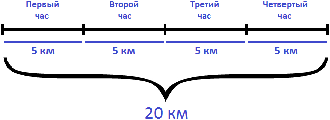
Показать решение
Решение
Определим расстояние от пункта А до пункта В. Для этого умножим скорость с которой ехал велосипедист из пункта А в пункт В (16км/ч) на время движения (5ч)
16 × 5 = 80 км
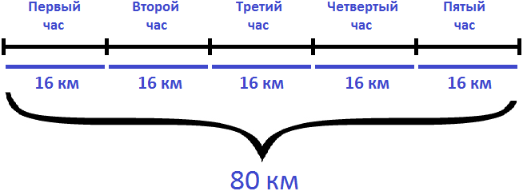
Определим сколько времени велосипедист затратил на обратный путь. Для этого расстояние (80км) разделим на скорость движения (10км/ч)
80 : 10 = 8 ч
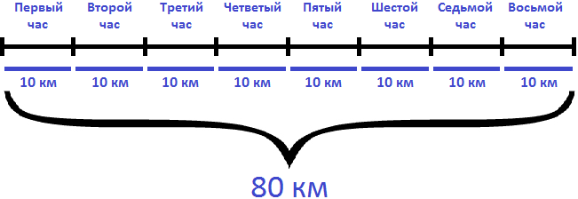
Показать решение
Решение
Определим путь, пройденный велосипедистом за 6 часов. Для этого из 83 км вычтем путь, который он прошел после шести часов движения (11км)
83 − 11 = 72 км
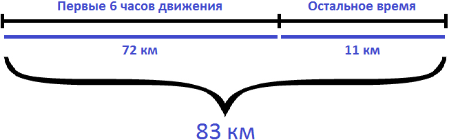
Определим с какой скоростью ехал велосипедист первые 6 часов. Для этого разделим 72 км на 6 часов
72 : 6 = 12 км/ч
Поскольку в условии задаче сказано, что остальные 11 км велосипедист проехал с той же скоростью, что и в первые 6 часов движения, то скорость равная 12 км/ч является ответом к задаче.
Ответ: велосипедист ехал со скоростью 12 км/ч.
Показать решение
Решение
Найдем скорость течения реки. В условии сказано, что плот может проплыть 72 километра за 36 часов. Плот не может двигаться против течения реки. Значит скорость плота с которой он преодолевает эти 72 километра и является скоростью течения реки. Чтобы найти эту скорость, нужно 72 километра разделить на 36 часов
72 : 36 = 2 км/ч
Найдем собственную скорость теплохода. Сначала найдем скорость его движения против течения реки. Для этого разделим 72 километра на 4 часа
72 : 4 = 18 км/ч
Если против течения реки скорость теплохода составляет 18 км/ч, то собственная его скорость равна 18+2, то есть 20 км/ч. А по течению реки его скорость будет составлять 20+2, то есть 22 км/ч
Разделив 110 километров на скорость движения теплохода по течению реки (22 км/ч), можно узнать за сколько часов теплоход проплывет эти 110 километров
110 : 22 = 5 ч
Ответ: по течению реки теплоход проплывет 110 километров за 5 часов.
Показать решение
Решение
Найдем скорость удаления велосипедистов
11 + 13 = 24 км
Узнаем какое расстояние будет между ними через 4 часа
24 × 4 = 96 км
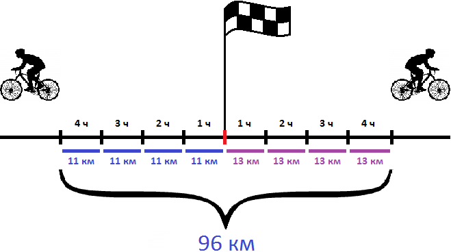
Ответ: через 4 часа расстояние между велосипедистами будет 96 км.
Показать решение
Решение
Определим расстояние, пройденное первым теплоходом. Для этого умножим его скорость (21 км/ч) на время движения до встречи (6ч)
21 × 6 = 126 км
Определим расстояние, пройденное вторым теплоходом. Для этого умножим его скорость (24 км/ч) на время движения до встречи (6ч)
24 × 6 = 144 км
Определим расстояние между пристанями. Для этого сложим расстояния, пройденные первым и вторым теплоходами
126 км + 144 км = 270 км
Ответ: первый теплоход прошел 126 км, второй — 144 км. Расстояние между пристанями составляет 270 км.
Показать решение
Решение
Определим сколько километров до встречи прошел поезд, вышедший из Москвы. Для этого умножим его скорость (51 км/ч) на 16 часов
51 × 16 = 816 км
Узнаем сколько километров до встречи прошел поезд, вышедший из Уфы. Для этого из расстояния между Москвой и Уфой (1520км) вычтем расстояние, пройденное поездом, вышедшим из Москвы
1520 − 816 = 704 км
Определим скорость с которой шел поезд, вышедший из Уфы. Для этого расстояние, пройденное им до встречи, нужно разделить на 16 часов
704 : 16 = 44 км/ч
Определим расстояние, которое будет между поездами через 5 часов после их встречи. Для этого найдем скорость удаления поездов и умножим эту скорость на 5
51 км/ч + 44 км/ч = 95 км/ч
95 × 5 = 475 км.
Ответ: поезд, вышедший из Уфы, шел со скоростью 44 км/ч. Через 5 часов после их встречи поездов расстояние между ними будет составлять 475 км.
Показать решение
Решение
Найдем скорость второго автобуса. Она на 6 км/ч больше скорости первого автобуса
48 км/ч + 6 км/ч = 54 км/ч
Найдем скорость удаления автобусов. Для этого сложим их скорости:
48 км/ч + 54 км/ч = 102 км/ч
За час расстояние между автобусами увеличивается на 102 километра. Чтобы узнать через сколько часов расстояние между ними будет 510 км, нужно узнать сколько раз 510 км содержит по 102 км/ч
510 : 102 = 5 ч
Ответ: 510 км между автобусами будет через 5 часов.
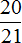
скорости московского поезда. На каком расстоянии от Ростова встретятся поезда?Показать решение
Решение
Найдем скорость ростовского поезда. Она составляет скорости московского поезда. Поэтому чтобы определить скорость ростовского поезда, нужно найти от 63 км
63 : 21 × 20 = 3 × 20 = 60 км/ч
Найдем скорость сближения поездов
63 км/ч + 60 км/ч = 123 км/ч
Определим через сколько часов поезда встретятся
1230 : 123 = 10 ч
Узнаем на каком расстоянии от Ростова встретятся поезда. Для этого достаточно найти расстояние, пройденное ростовским поездом до встречи
60 × 10 = 600 км.
Ответ: поезда встретятся на расстоянии 600 км от Ростова.
Показать решение
Решение
Найдем скорость второй лодки. Она составляет 75% скорости первой лодки. Поэтому чтобы найти скорость второй лодки, нужно 75% от 16 км
16 × 0,75 = 12 км/ч
Найдем скорость сближения лодок
16 км/ч + 12 км/ч = 28 км/ч
С каждым часом расстояние между лодками будет уменьшáться на 28 км. Через 2 часа оно уменьшится на 28×2, то есть на 56 км. Чтобы узнать какое будет расстояние между лодками в этот момент, нужно из 75 км вычесть 56 км
75 км − 56 км = 19 км
Ответ: через 2 часа между лодками будет 19 км.
Показать решение
Решение
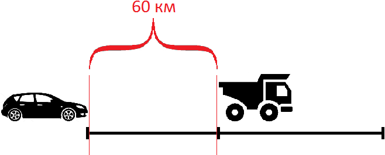
Найдем скорость сближения
62 км/ч − 47 км/ч = 15 км/ч
Если первоначально расстояние между машинами было 60 километров, то с каждым часом это расстояние будет уменьшáться на 15 км, и в конце концов легковая машина догонит грузовую. Чтобы узнать через сколько часов это произойдет, нужно определить сколько раз 60 км содержит по 15 км
60 : 15 = 4 ч
Узнаем на каком расстоянии от начала движения легковая машина догнала грузовую. Для этого умножим скорость легковой машины (62 км/ч) на время её движения до встречи (4ч)
62 × 4 = 248 км
Ответ: легковая машина догонит грузовую через 4 часа. В момент встречи легковая машина будет на расстоянии 248 км от начала движения.
Показать решение
Решение
Найдем скорость второго мотоциклиста. Она составляет 80% скорости первого мотоциклиста. Поэтому чтобы найти скорость второго мотоциклиста, нужно найти 80% от 35 км/ч
35 × 0,80 = 28 км/ч
Первый мотоциклист двигается на 35-28 км/ч быстрее
35 км/ч − 28 км/ч = 7 км/ч
За один час первый мотоциклиста преодолевает на 7 километров больше. С каждым часом она будет приближáться ко второму мотоциклисту на эти 7 километров.
Через 5 часов первый мотоциклист пройдет 35×5, то есть 175 км, а второй мотоциклист пройдет 28×5, то есть 140 км. Определим расстояние, которое между ними. Для этого из 175 км вычтем 140 км
175 − 140 = 35 км
Ответ: через 5 часов расстояние между мотоциклистами будет 35 км.
Показать решение
Решение
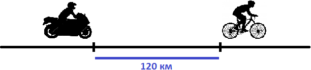
Найдем скорость сближения:
43 км/ч − 13 км/ч = 30 км/ч
Если первоначально расстояние между мотоциклистом и велосипедистом было 120 километров, то с каждым часом это расстояние будет уменьшáться на 30 км, и в конце концов мотоциклист догонит велосипедиста. Чтобы узнать через сколько часов это произойдет, нужно определить сколько раз 120 км содержит по 30 км
120 : 30 = 4 ч
Значит через 4 часа мотоциклист догонит велосипедиста
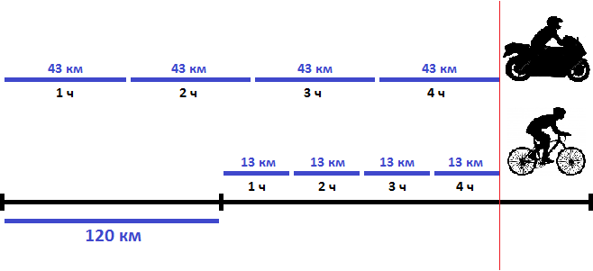
На рисунке представлено движение мотоциклиста и велосипедиста. Видно, что через 4 часа после начала движения они сровнялись.
Ответ: мотоциклист догонит велосипедиста через 4 часа.
Показать решение
Решение
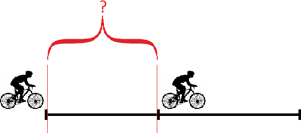
Определим скорость велосипедиста, ехавшего впереди. Для этого найдем 75% от скорости велосипедиста, ехавшего сзади:
12 × 0,75 = 9 км/ч — скорость ехавшего впереди
Узнаем сколько километров проехал каждый велосипедист до того, как второй догнал первого:
12 × 6 = 72 км — проехал ехавший сзади
9 × 6 = 54 км — проехал ехавший впереди
Узнаем какое расстояние было между велосипедистами первоначально. Для этого из расстояния, пройденного вторым велосипедистом (который догонял) вычтем расстояние, пройденное первым велосипедистом (которого догнали)
72 км − 54 км = 18 км
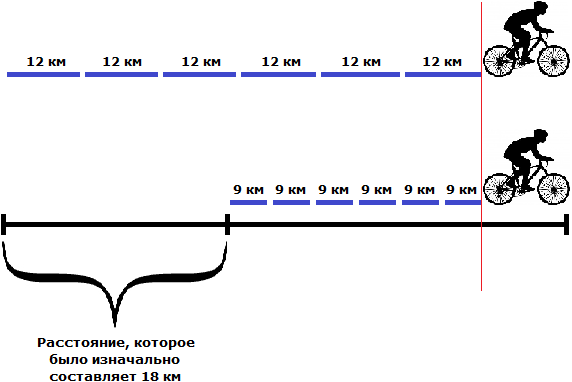
Ответ: между велосипедистами первоначально было 18 км.
Показать решение
Решение
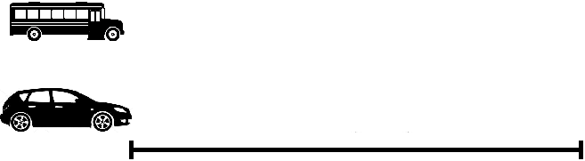
Найдем скорость удаления автомобиля от автобуса
53 км/ч − 41 км/ч = 12 км/ч
С каждым часом автомобиль будет удаляться от автобуса на 12 километров. На рисунке показано положение машин после первого часа движения
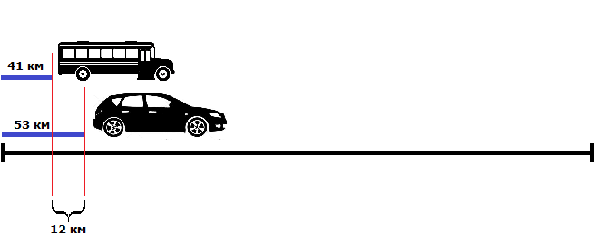
Видно, что автомобиль впереди автобуса на 12 км.
Чтобы узнать через сколько часов автомобиль будет впереди автобуса на 48 километров, нужно определить сколько раз 48 км содержит по 12 км
48 : 12 = 4 ч
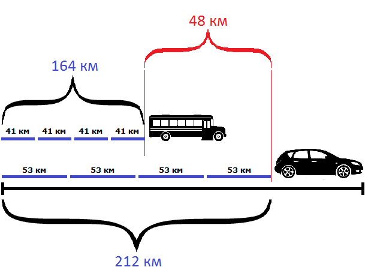
Ответ: через 4 часа после выезда автомобиль будет впереди автобуса на 48 километров.